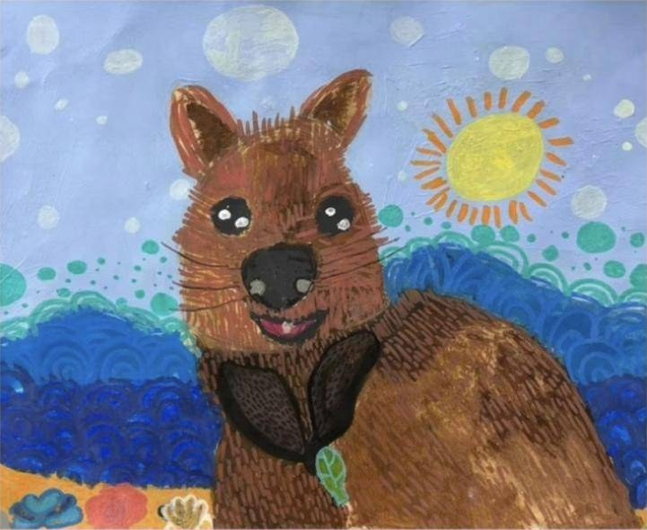
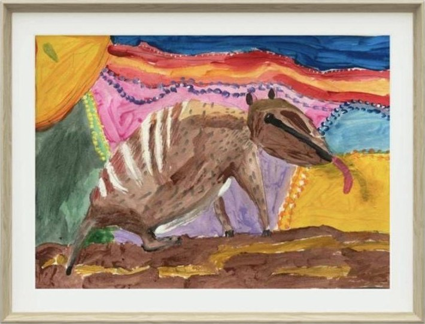
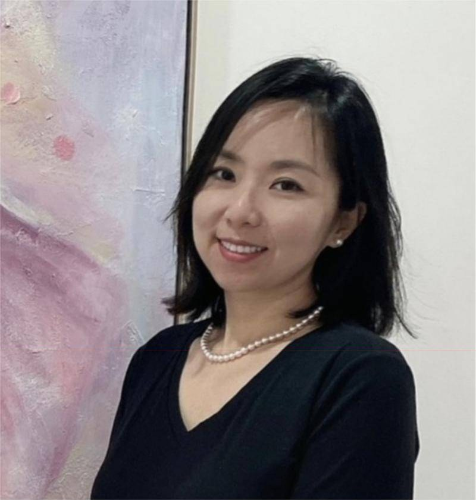

Room 01 · Ages 4–6
Little Artists小小艺术家
Foundations and creative thinking, made in watercolour, crayon and paint.儿童基本功与创意思维：水彩、蜡笔与颜料。
View the gallery


Art classes in Sydney · Ages 4–18
学会观察 · 勇于思考 · 独立创作
Art classes in Sydney for children and teenagers aged 4 to 18, taught by artist and educator Alina Yang.面向4至18岁儿童与青少年的悉尼美术课程，由艺术家、美术教育者 Alina Yang 亲自授课。
Miss Yang’s Art School · Sydney · 杨老师美术学校

The line / 一条线
Each stage adds one thing to the line: colour, then story, then observation, then independence.每个阶段都为这条线加上一层：先是色彩，再是故事，然后是观察，最后是独立。




Galleries / 作品展
Every artwork is a student’s own. The youngest room is open now; the other three open as work arrives.每一幅作品都出自学生之手。最小的展厅已经开放，其余三个将随作品陆续上线。
Room 01 · Ages 4–6
Foundations and creative thinking, made in watercolour, crayon and paint.儿童基本功与创意思维：水彩、蜡笔与颜料。
View the gallery
Room 02 · Ages 6–8
Creative painting, acrylics, picture books and 3D work.
Room 03 · Ages 9–11
Drawing, acrylics, sketching, manga basics and themed projects.
Room 04 · Ages 12–18
Advanced drawing, acrylics and independent work.

About / 关于
Alina Yang, founder, artist and art educator 创始人、艺术家、美术教育者
I believe every child has a unique artistic voice. For younger children, I focus on nurturing imagination, curiosity and creative confidence.我相信每个孩子都有独特的艺术语言。对于年幼的孩子，我注重呵护他们的想象力、好奇心和创作自信。
As students grow, I provide personalised guidance and structured art education, helping them develop strong technical skills while discovering their own artistic style.随着孩子成长，我会提供个性化指导和系统的美术教育，帮助他们打下扎实的绘画功底，同时找到属于自己的艺术风格。
Nurturing imagination. Building skills. Inspiring individuality.呵护想象，夯实基础，激发个性。
How we teach / 教育理念
Develop visual observation, analytical thinking and spatial awareness, and an understanding of shape, structure, light and colour.培养观察力、分析思维、空间认知，理解造型、结构、光影与色彩原理。
Encourage imagination, curiosity, original ideas, exploration and creative problem-solving.保护想象力与好奇心，发展原创思维、探索精神与解决问题的能力。
Develop independent planning, artistic decision-making, personal expression and the ability to complete original artworks.培养自主构思、艺术决策、个人表达及独立完成原创作品的能力。
Classes & fees / 课程与收费
From first lines and colours to HSC Visual Arts. Year levels and ages are for reference only; each student’s level is set by their ability and progress.从最初的线条与色彩，到HSC视觉艺术。年级和年龄仅供参考，课程阶段将根据学员实际能力与学习进度安排。
| Course课程 | Year学年 | Age年龄 | Skills技法 | Per lesson单节 | Per term学期 |
|---|---|---|---|---|---|
| Creative Foundations创意启蒙 | CC–Kindy | 4–6 | Line, shape, colour, basic composition线条、形状、色彩、基础构图 | $45 | $45010 lessons |
| Art Foundations系统绘画基础 | Year 1–6 | 7–11 | Proportion, structure, perspective, colour, light and shade比例、结构、透视、色彩、明暗 | $50 | $50010 lessons |
| Advanced Art进阶艺术 | Year 7–10 | 12–15 | Advanced drawing, light and colour, figure structure, mixed media进阶素描、光影色彩、人物结构、综合媒介 | $55 | $55010 lessons |
| HSC Visual Arts MentoringHSC视觉艺术辅导 | Year 11–12 | 16–18 | Professional techniques, media experiments, series of works专业技法、媒介实验、系列作品 | $65 | $65010 lessons |
Signature projects / 特色项目
Longer projects that students take from first idea to finished work, run over several weeks. They are teaching projects, and the finished piece is the exercise.从构思到完成，学生独立完成每一个创作项目，每个项目持续数周。这些是教学项目，完成的作品本身就是练习。
Exploring materials, techniques and creative expression. Each project runs over several weeks: plan, draw, revise, finish.探索不同媒材、艺术技法与创意表达。每个项目持续数周：构思、起草、修改、完成。
Original picture books, four-panel comics and character design.
Observing everyday life, drawing outdoors and on location.
One story, four frames, a beginning and a turn.
Characters, sequence and a story told page by page.
A character with a face, a posture and a personality.
Setting, light and space, built from observation.

Beyond the weekly class / 常规课程之外
01
Short, focused workshops in the school holidays.学校假期期间的专题工作坊。
02 · 2027 pilot
From young artists to confident young leaders, through sharing their art and working together.从独立创作，到自信表达与合作成长。
Enquire / 咨询课程
Tell us your child’s age and any art experience, and Miss Yang will suggest a class to start with.告诉我们孩子的年龄和学画经历，杨老师会为您推荐合适的课程。
alinayang800@gmail.com